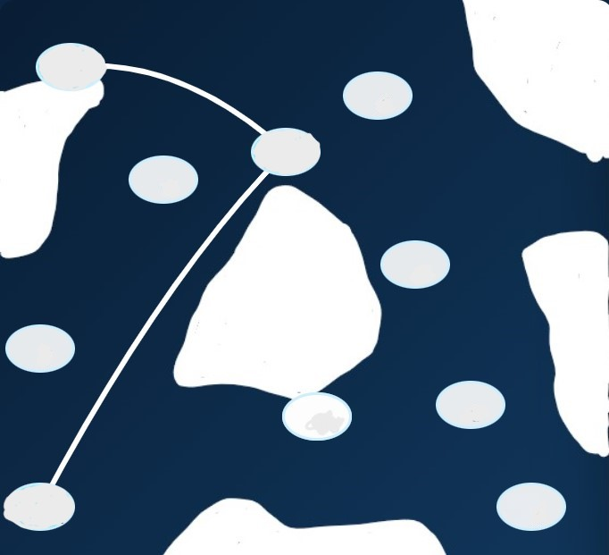

You have decoded the explorer's message.
You know which route the lost crew has to take through the ice.
Remember it!

The rescue team now knows where to continue the search.
📍 Wanny Woldstad (Trafikkskole)
69.653077, 18.962380
Proceed to the location and open the next clue.